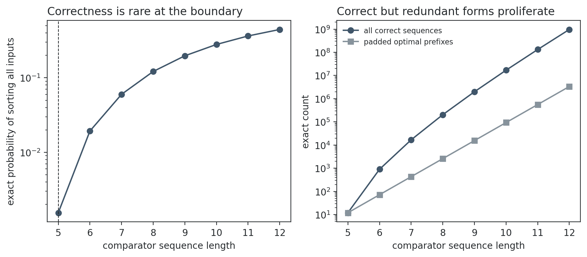
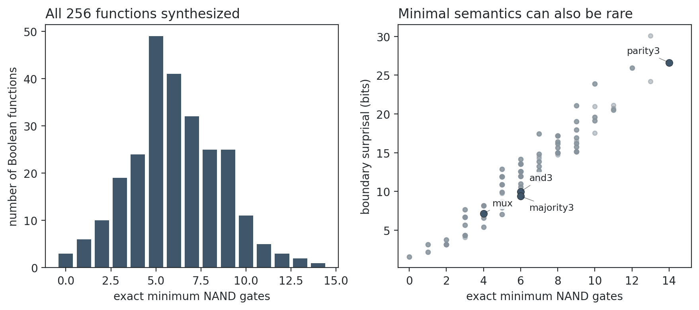
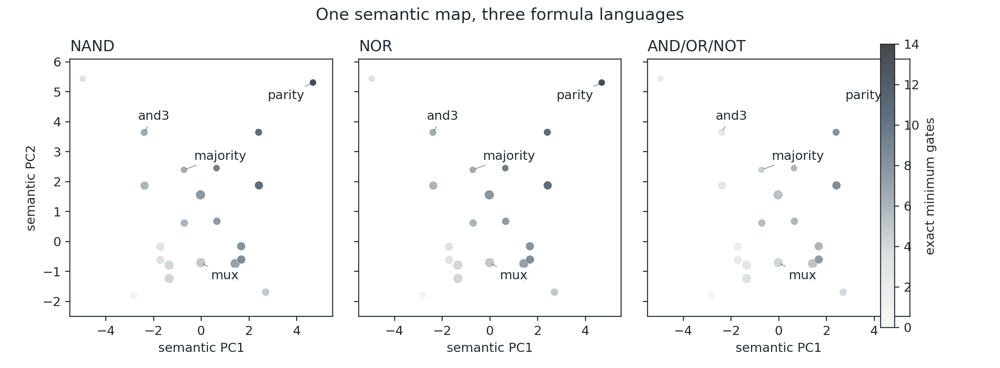

Creativity as Constrained Rarity
Semantics, Compression, and Representation in Finite Program Spaces
This note develops a representation-conditional theory of constrained rarity and tests it in two finite program spaces. A semantic fiber collects all programs of a fixed size that compute the same function; compression locates the first nonempty fiber, while rarity measures its mass under an explicit prior. General results formalize semantic padding, prior dependence, and the loss of distinctions under semantic coarsening. Exact Boolean synthesis and exhaustive sorting-network enumeration show that semantic structure is real, but numerical rarity, compression, and geometric rigidity remain conditional on language, prior, baseline, and resolution.
1. Finite semantic fibers
Let \(E_{\mathcal L}=\bigsqcup_{\ell\ge0}E_{\mathcal L,\ell}\) be a finite graded representation language and let
$$\operatorname{eval}_{\mathcal L}:E_{\mathcal L}\to F$$map syntax to a semantic task or function. For \(f\in F\), define
$$A_{\mathcal L,\ell}(f)=\{e\in E_{\mathcal L,\ell}:\operatorname{eval}_{\mathcal L}(e)=f\}, \qquad L^*_{\mathcal L}(f)=\min\{\ell:A_{\mathcal L,\ell}(f)\ne\varnothing\}.\tag{1}$$Definition 1 (fiber, boundary, and surprisal). Under the uniform prior conditional on exact size, boundary probability and surprisal are
$$q_{\mathcal L}(f)=\frac{|A_{\mathcal L,L^*}(f)|}{|E_{\mathcal L,L^*}|}, \qquad R_{\mathcal L}(f)=-\log_2q_{\mathcal L}(f).\tag{2}$$For a frozen compiler or reference construction of length \(L_{0,\mathcal L}(f)\), let \(G_{\mathcal L}(f)=L_{0,\mathcal L}(f)-L^*_{\mathcal L}(f)\). The operational object is a vector, not a universal scalar:
$$\mathcal C_{\mathcal L}(f)=\bigl(S(f),G_{\mathcal L}(f),R_{\mathcal L}(f),\psi(f)\bigr).\tag{3}$$Proof. Each map injects the old fiber into the new one; disjointness makes the \(m\) images additive. Iteration gives the second claim.
Appending any of six comparators gives \(m=6,\delta=1\) for a sorted network. In ordered AND/OR/NOT formulas, the six contexts \(e\land(x_i\lor\neg x_i)\) and \(e\lor(x_i\land\neg x_i)\) give \(m=6,\delta=3\). Redundant correct syntax therefore proliferates in both languages without implying identical grammars.
Proof. Choose any conditional distribution \(w_f\) on each nonempty fiber and set \(P(e)=q(f)w_f(e)\) when \(e\) evaluates to \(f\). Summing inside each fiber returns \(q(f)\).
Thus semantic rarity is not invariant until the representation language and prior are fixed.
Proof. Equality under \(\phi\) implies equality after applying \(c\). Every fine equivalence class therefore lies inside a coarse class.
2. Sorting: bounds, paths, and exact networks
Comparison trees
Theorem 5 (comparison boundary and random-label thinness).
For \(n\) distinct keys, a correct binary comparison tree must distinguish all \(n!\) order types. Hence it has at least \(n!\) reached leaves and worst-case depth
$$d\ge\lceil\log_2(n!)\rceil.\tag{4}$$If a fixed tree shape and its internal comparison labels are given, but each reached leaf is independently labeled by a uniform random permutation, the chance that every order type receives its required output is at most \((1/n!)^{n!}\). This is a statement about the declared random-label prior, not about human algorithm design.
Adjacent-swap paths
Theorem 6 (geodesic length, parity, and redundant paths).
In the Cayley graph of \(S_n\) generated by adjacent swaps, the distance from a permutation \(\sigma\) to the identity is its inversion count \(I=\operatorname{inv}(\sigma)\). An exact path can have length only \(L\ge I\) with \(L-I\) even. If \(\Gamma_L(\sigma)\) is the set of such paths,
$$|\Gamma_{I+2m}(\sigma)|\ge(n-1)^m|\Gamma_I(\sigma)|.\tag{5}$$The bound follows by appending \(m\) canceling pairs \((s_i,s_i)\) to each geodesic. It gives a second exact mechanism by which semantic slack creates representational multiplicity.
Four-input comparator networks
A comparator network is a word over the six unordered wire pairs. Every word is tested on all 24 inputs. No word through length four sorts; exactly 12 of the \(6^5=7{,}776\) length-five words sort, so
$$q_5(\mathrm{sort})=0.00154321,\qquad R_5=9.340\ \text{bits}.\tag{6}$$Correct counts rise to 900, 16,800, and 204,120 at lengths six, seven, and eight. The padding theorem guarantees only 72, 432, and 2,592 descendants of optimal prefixes, showing that most longer correct networks arise by genuinely different routes.

3. Boolean formulas: exact semantic synthesis
A formula is an ordered rooted tree with leaves \(x_0,x_1,x_2\), and size is its number of gates. Let \(C_\ell(t)\) count size-\(\ell\) formulas with truth table \(t\). For a gate set \(\mathcal O_r\) of arity \(r\), exact root decomposition gives
Theorem 7 (exact root-decomposition recurrence).
$$C_0(t)=|\{i:\operatorname{eval}(x_i)=t\}|,$$ $$C_\ell(t)=\sum_{r\ge1}\sum_{o\in\mathcal O_r} \sum_{\ell_1+\cdots+\ell_r=\ell-1} \sum_{o(t_1,\ldots,t_r)=t}\prod_{j=1}^r C_{\ell_j}(t_j).\tag{7}$$Every non-leaf formula has a unique root, ordered child tuple, and size split, so the recurrence counts every formula exactly once. For NAND or NOR, summing over truth tables recovers \( |E_\ell|=\operatorname{Catalan}(\ell)3^{\ell+1}\), an independent count check.
Proof. Replace each leaf \(x_i\) by \(x_{\pi(i)}\); the inverse is relabeling by \(\pi^{-1}\).
All 256 functions are synthesized. In NAND, three-bit parity is uniquely hardest at 14 gates. Exactly 373,248 of 38,375,290,837,080 size-14 formulas compute it, for 26.615 bits of boundary surprisal. Across all functions, minimum NAND size and surprisal have Spearman \(\rho=0.948\), while canonical-compiler compression gain and surprisal have \(\rho=-0.037\).

4. Semantic prediction and representation stability
The syntax-free descriptor \(\psi(f)\) contains signed output bias, sorted variable influences, Walsh–Fourier energy at degrees zero through three, algebraic degree, and the size of the input-permutation stabilizer. These features define 36 exact descriptor classes. The same semantic coordinates are used for NAND, NOR, and AND/OR/NOT.

Cross-language stability
| Language pair | Minimum size | Boundary surprisal | Compression gain |
|---|---|---|---|
| NAND / NOR | 0.548 | 0.376 | 0.264 |
| NAND / AND–OR–NOT | 0.805 | 0.739 | 0.612 |
| NOR / AND–OR–NOT | 0.805 | 0.739 | 0.601 |
Minimum complexity has a substantial semantic component, but rarity and compiler-relative compression are more sensitive to primitive language choices.
Group-held-out prediction and matched nulls
| Language | Function held out | Orbit held out | Descriptor held out | Strict RMSE |
|---|---|---|---|---|
| NAND | 0.831 | 0.726 | 0.613 | 1.583 |
| NOR | 0.833 | 0.729 | 0.643 | 1.522 |
| AND/OR/NOT | 0.920 | 0.859 | 0.656 | 1.161 |
A seven-nearest-neighbor predictor is tested by holding out individual functions, complete input-permutation orbits, and complete invariant-descriptor classes. The last protocol removes all feature-identical twins. In 1,000 matched permutations within strata of signed bias, algebraic degree, and stabilizer size, no null replicate reaches the corresponding observed strict \(R^2\), giving \(p=1/1001<0.001\) in every language.

5. Sorting trajectories at two semantic resolutions
For comparator prefix \(e_{1:t}\), let \(Y_t\) be its output on a uniformly sampled input permutation and define
$$p_t(y)=\Pr(Y_t=y),\qquad H_t=-\sum_y p_t(y)\log_2p_t(y).\tag{8}$$The entropy path \((H_0,\ldots,H_L)\) is a coarsening of the full distribution path \((p_0,\ldots,p_L)\). A single global wire permutation acts on all 24 coordinates at every step; each full path is represented by the lexicographically least member of its orbit.
| Length | Correct words | Entropy paths | Full paths / wires | Raw full paths |
|---|---|---|---|---|
| 5 | 12 | 1 | 12 | 12 |
| 6 | 900 | 27 | 756 | 756 |
| 7 | 16,800 | 147 | 4,356 | 4,356 |
| 8 | 204,120 | 497 | 15,036 | 15,036 |
All 12 optimal networks share one entropy curve but have 12 distinct full paths. Equality after coarsening cannot be read backward as equality of computation.

6. Interpretation
- Correct programs form semantic fibers; compression identifies the first nonempty fiber.
- Semantic padding creates large redundant families, but exact growth depends on grammar.
- Semantic structure predicts synthesis difficulty beyond renaming twins and matched null properties.
- Rarity and baseline-relative compression require an explicit language and prior.
- Apparent geometric rigidity can be created by a coarse semantic statistic.
The framework does not establish human originality, aesthetic value, discovery effort, or universal Kolmogorov complexity. For formal mathematics, isolation in one Lean embedding is not evidence of profundity. A stronger analysis should compare theorem statements and proof journeys at several semantic resolutions, remove complete equivalence neighborhoods, and demand stability under vocabulary ablation, repository matching, and alternative encodings.
7. Reproducibility
All five experiments and the document build run locally without cloud services or model APIs:
python experiments/creativity-sorting-networks/scripts/analyze.py python experiments/creativity-boolean-synthesis/scripts/analyze.py python experiments/creativity-boolean-atlas/scripts/analyze.py python experiments/creativity-sorting-atlas/scripts/analyze.py python experiments/creativity-atlas-validation/scripts/analyze.py
Scripts, frozen configurations, artifacts, and figures are checked in. Counts are verified by independent recurrences or brute-force enumeration, and null draws use seed 0. The matching paper is available as Creativity as Constrained Rarity.